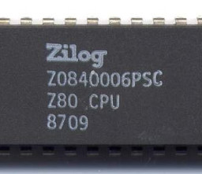

Writing new interactive fiction games for CP/M using PunyInform and Linux

This article is about using a Linux workstation to write interactive fiction ("text adventure") games for CP/M. Although the main focus is CP/M, much of the article applies equally to other small-scale, vintage computers. All the tools required are well-documented; what seems to be lacking is any comprehensive overview of the whole process.
The article focuses on the Inform programming language and associated libraries. There are many other ways to write interactive fiction for modern computers, but I suspect that Inform is probably the only recognizably-modern authoring system, that can still be used with CP/M.
What you'll need
Here's a summary; full details to follow.
The Inform 6 compiler.
The PunyInform library.
A copy of Frotz, if you want to test your games on Linux.
A copy of Zork 1 for CP/M or, in fact, any of the Infocom "Z machine" games.
A CP/M machine or emulator, with at least one (real or emulated) floppy disk drive. I've described how to use an emulator to play interactive fiction in another article.
A willingness to work with command-line tools.
Familiarity with the Inform 6 programming language and library, or a willingness to learn.
I'll describe how to obtain and compile the necessary software, and how to use it to build a Z machine data file that can be played on CP/M. I won't (sorry) be describing the Inform language or library -- there are already hundreds of articles and examples on the Web.
Some background
Inform is a programming language developed by Graham Nelson in the 1990s, optimized for writing interactive fiction games. Inform is a compiled language in the same sense that Java is -- it produces machine code, but it's not code for any real computer. Just as a Java compiler produces machine code for a Java virtual machine, Inform produces machine code for a "Z machine". This machine code is usually called "Z code".
There are various versions of Z code. Almost all games produced after the heyday of CP/M use versions 5 or 8. So far as I know, the only Z machine for CP/M was for version 3. This is the Z machine that was developed to play Zork and the other Infocom games. Z code version 3 has a number of striking limitations, but none are relevant to CP/M -- the limitations of CP/M itself are a bigger problem than those of Z code. Most obviously, the compiled game has to fit onto a floppy disk.
The Inform language and compiler changed substantially between versions 6 and 7. So far as I know, version 6 of Inform is the latest that can produce version 3 Z code.
The original Infocom games for CP/M were distributed as essentially two files: a .COM file, which was actually a general-purpose Z machine, and a .DAT file that contained the compiled game. The .COM file from any of the Infocom games will play any compiled Z code 3 game, even one authored using modern tools.
The Inform compiler itself is only one component of the software needed to produce Z code games. Equally important is the run-time library. The library will contain the language parser, and template definitions of the kinds of things used in interactive fiction games -- locations, directions, verbs, etc. The standard Inform library is too heavy for CP/M and similar systems, but there is a broadly-compatible, lightweight version called PunyInform.
The Inform 6 compiler
Some Linux versions have a binary version of Inform 6 in their repositories.
If not, it's trivially easy to build from source on Linux (if you have
gcc available).
Download the Inform 6 compiler from GitHub. Unpack it into any convenient directory, and compile and install it like this:
$ gcc -o inform *.c $ sudo cp -p inform /usr/bin
The PunyInform library
download the PunyInform library from GitHub
Unpack it into any convenient
directory. In what follows, I'm assuming $HOME/lib/PunyInform/.
A Hello World example
The following is a trivially simple Inform 6 game. Save this as
test.inf. Incidentally, the vim text editor
has syntax-highlighting rules for Inform 6, which can make coding
more agreeable.
!% -~S
!% $OMIT_UNUSED_ROUTINES=1
Constant Story "A test";
Constant Headline "^Yadda yadda yadda^";
Constant OPTIONAL_NO_DARKNESS;
Constant INITIAL_LOCATION_VALUE = Start;
Include "globals.h";
Include "puny.h";
Object Start "Start"
with
description "You are at the start. You can go south.",
s_to [;
deadflag=1;
"You have been eaten by a grue.";
];
[Initialise;
print "This is a test^^";
];
To compile this example:
$ inform -v3 +$HOME/lib/PunyInform/lib test.inf
All being well, this will produce test.z3.
Testing using Frotz
To run the game on a Linux workstation, just use Frotz, which understands Z code version 3:
$ frotz test.z3
Be aware, though that, just because the game runs properly on a Linux
machine does not necessarily mean that it will work under real CP/M.
In particular,
frotz on a modern Linux system will run Z code about a thousand
times faster than any authentic CP/M system.
Running on CP/M
You'll need a copy of Zork 1 for CP/M, or any of the other Infocom games. The only difference between the .COM files for these games is nothing more than the name of the data file they will read. Although the Zork games for CP/M are widely distributed, their legal status is disputed. The legal position of the Z code interpreter is tangled up with that of the Zork data files, which are often claimed to be in the public domain (which is probably untrue). The situation is complicated by the fact that Activision Inc., which notionally owns the rights to these programs, has from time to time given permission to various other sites to distribute them.
I got my copy of Zork 1 from here, but a web search will reveal many other sources. Because of the uncertain legal position, I won't be distributing the original .COM file here.
The program ZORK1.COM will run the data file
ZORK1.DAT. To run any other Z-code 3 game, just
rename it to ZORK1.DAT and copy it to the same
floppy disk as the .COM file.
Incidentally, the filename of the data file is stored in ZORK1.COM in bytes 5-13, padded with spaces. So, rather than renaming your data file "ZORK1.DAT" you could create a customized version of the .COM file that runs your specific data file -- just edit the relevant bytes with a hex editor.
Closing remarks
Interactive fiction gaming remains an interesting application of vintage computers, particularly those from the pre-graphical days. Technologically it's straightforward to author these games, and their operation is remarkably similar across a whole range of vintage and contemporary hardware. Creating good content is, of course, a different matter entirely.